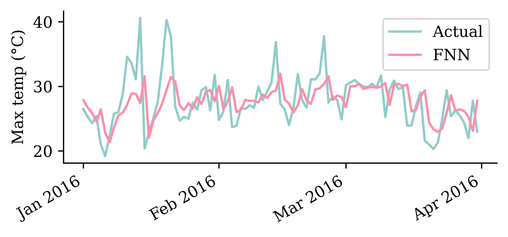

import re
import random
from pathlib import Path
import matplotlib.pyplot as plt
import matplotlib.dates as mdates
import numpy as np
import pandas as pd
from sklearn.linear_model import LinearRegression
from sklearn.metrics import mean_squared_error
from sklearn.preprocessing import LabelEncoder
from sklearn.model_selection import train_test_split
from sklearn.feature_extraction.text import CountVectorizer
import keras
from keras.models import Sequential
from keras.layers import (Dense, Input, Rescaling, Reshape,
SimpleRNN, GRU, LSTM, Bidirectional, Embedding)
from keras.callbacks import EarlyStoppingTime Series & Recurrent Neural Networks
ACTL3143 & ACTL5111 Deep Learning for Actuaries
The forecasting problem
We stand at a reference time t: we have seen the series up to now, and want the next h values.

We need to know all covariates at time t to make a prediction at t+1.
Three kinds of forecasting models

A schematic contrasting local univariate models (one series predicts itself), global univariate models (multiple series predict one), or multivariate models (multiple inputs, multiple targets).
For local models, you would have a separate model for each time series. Global models allow for cross-learning, and are more promising for deep forecasting techniques.
Focus on one stock

Convert to log returns
Instead of working with raw prices, we’ll work with daily log returns:

Splitting in time
Code
import matplotlib.dates as mdates
fig, ax = plt.subplots(figsize=(6, 2.6))
for label, lo, hi in [("Train", None, temp_train_end), ("Val", temp_val_start, temp_val_end), ("Test", temp_test_start, None)]:
ax.plot(temps["Temp"].loc[lo:hi].index, temps["Temp"].loc[lo:hi], label=label)
ax.set_ylabel("Max temp (°C)")
ax.xaxis.set_major_locator(mdates.YearLocator(5))
ax.xaxis.set_major_formatter(mdates.DateFormatter("%Y"))
ax.legend(loc="upper left", fontsize=7);
Constant forecast
The whole validation period is held constant at the last price we saw just before it. This is the multi-step naïve forecast (zero log returns from the origin onward).

Extrapolate the trend
Average daily log return: 0.000532
Trend forecasts
Code
stock.loc[start:end, ["CBA"]].plot(label="CBA")
constant_prices.loc[start:end].plot(label="Constant")
trend_prices.loc[start:end].plot(label="Trend")
plt.axvline(f"{cba_val_start}-01", color="black", linestyle="--")
plt.ylabel("Stock Price ($)")
plt.legend(ncol=3, loc="upper center", bbox_to_anchor=(0.5, 1.3));
Persistence forecast (one-step)
Now two baselines for the temperature series. First, persistence: predict tomorrow’s maximum temperature to be the same as today’s, \hat{y}_t = y_{t-1}.
Code
ax = temps.loc[f"{temp_test_start}-01":f"{temp_test_start}-03", "Temp"].plot(label="Actual", x_compat=True)
persistence.loc[f"{temp_test_start}-01":f"{temp_test_start}-03"].plot(ax=ax, label="Persistence", x_compat=True)
ax.set_ylabel("Max temperature (°C)")
ax.xaxis.set_major_locator(mdates.MonthLocator())
ax.xaxis.set_major_formatter(mdates.DateFormatter("%b"))
ax.set_xlabel("")
ax.legend();
Seasonal forecast
Code
ax = temps.loc[temp_test_start, "Temp"].plot(label="Actual", x_compat=True)
seasonal.loc[temp_test_start].plot(ax=ax, label="Seasonal", x_compat=True)
ax.set_ylabel("Max temperature (°C)")
ax.xaxis.set_major_locator(mdates.MonthLocator())
ax.xaxis.set_major_formatter(mdates.DateFormatter("%b"))
ax.set_xlabel("")
ax.legend();
A linear model
CBA log-return forecasts (Q1 of test set)
Temperature forecasts (Q1 of test set)
Code
ax = pd.DataFrame({"Actual": y_test_temp, "Linear": y_pred_temp}, index=y_test_temp.index).loc[f"{temp_test_start}-01":f"{temp_test_start}-03"].plot(x_compat=True)
ax.set_ylabel("Max temp (°C)")
ax.set_xlabel("")
ax.xaxis.set_major_locator(mdates.MonthLocator())
ax.xaxis.set_major_formatter(mdates.DateFormatter("%b"))
ax.legend();
A feedforward network
Same architecture for both; only the input rescaling differs: temperatures are divided by 40 (their rough maximum), log returns by their training-set standard deviation (finance_scale ≈ 0.014).
scale = 1 / finance_scale # for weather: 1/40
model = Sequential([Rescaling(scale), Dense(32, activation="leaky_relu"), Dense(1)])
model.compile(optimizer="adam", loss="mean_absolute_error")
model.fit(X_train_cba, y_train_cba, validation_data=(X_val_cba, y_val_cba), epochs=500,
callbacks=[EarlyStopping(patience=15, restore_best_weights=True)], verbose=0)CBA log-return forecasts (Q1 of test set)

Temperature forecasts (Q1 of test set)
Code
ax = pd.DataFrame({"Actual": y_test_temp, "FNN": y_pred_temp}, index=y_test_temp.index).loc[f"{temp_test_start}-01":f"{temp_test_start}-03"].plot(x_compat=True)
ax.set_ylabel("Max temp (°C)")
ax.xaxis.set_major_locator(mdates.MonthLocator())
ax.xaxis.set_major_formatter(mdates.DateFormatter("%b %Y"))
ax.set_xlabel("")
ax.legend();
Diagram of an RNN cell
The RNN processes each data point in the sequence one by one, while keeping memory of what came before.

Schematic of a recurrent neural network. E.g. SimpleRNN, LSTM, or GRU.
Intuition/demo: Fizz Buzz
Play Fizz Buzz: count up, but say “Fizz” on multiples of 3, “Buzz” on multiples of 5, and “Fizz Buzz” on multiples of both.

A vector-to-sequence RNN playing Fizz Buzz: one START input, the running count is the hidden state passed to the right, the spoken word is the output at each step.
Each player only needs the count from their neighbour (the hidden state) to know what to say and what to pass on — no separate input per step.
A SimpleRNN cell

Diagram of a SimpleRNN cell.
All the outputs before the final one are often discarded.
Long short-term memory (LSTM)

Diagram of an LSTM cell.
Gated Recurrent Unit (GRU)

Diagram of a GRU cell.
Recurrent layers can be stacked

Deep RNN unrolled through time.
Fitting the SimpleRNN
scale = 1 / finance_scale # for weather: 1/40
model = Sequential([Rescaling(scale), Reshape((-1, 1)), SimpleRNN(64, activation="tanh"), Dense(1)])
model.compile(optimizer="adam", loss="mean_absolute_error")
model.fit(X_train_cba, y_train_cba, validation_data=(X_val_cba, y_val_cba), epochs=500,
callbacks=[EarlyStopping(patience=15, restore_best_weights=True)], verbose=0)CBA stock price forecasts (test set)

Temperature forecasts (test set)
Code
ax = pd.DataFrame({"Actual": y_test_temp, "SimpleRNN": y_pred_temp}, index=y_test_temp.index).loc[f"{temp_test_start}-01":f"{temp_test_start}-03"].plot(x_compat=True)
ax.set_ylabel("Max temp (°C)")
ax.xaxis.set_major_locator(mdates.MonthLocator())
ax.xaxis.set_major_formatter(mdates.DateFormatter("%b %Y"))
ax.set_xlabel("")
ax.legend();
Fitting a GRU
scale = 1 / finance_scale # for weather: 1/40
model = Sequential([Rescaling(scale), Reshape((-1, 1)), GRU(16, activation="tanh"), Dense(1)])
model.compile(optimizer="adam", loss="mean_absolute_error")
model.fit(X_train_cba, y_train_cba, validation_data=(X_val_cba, y_val_cba), epochs=500,
callbacks=[EarlyStopping(patience=15, restore_best_weights=True)], verbose=0)CBA stock price forecasts (test set)
Temperature forecasts (test set)
Code
ax = pd.DataFrame({"Actual": y_test_temp, "GRU": y_pred_temp}, index=y_test_temp.index).loc[f"{temp_test_start}-01":f"{temp_test_start}-03"].plot(x_compat=True)
ax.set_ylabel("Max temp (°C)")
ax.xaxis.set_major_locator(mdates.MonthLocator())
ax.xaxis.set_major_formatter(mdates.DateFormatter("%b %Y"))
ax.set_xlabel("")
ax.legend();
Forecasting a few weeks ahead
Start the model with the last 40 real days, then forecast the next four weeks. Over a short horizon the errors may be small enough.
Code
horizon = 28
seed = X_test_temp.iloc[0].to_numpy()
short = pd.Series(autoregressive_forecast(fnn_w, seed, horizon),
index=y_test_temp.index[:horizon])
y_test_temp.iloc[:horizon].plot(label="Actual", marker=".", x_compat=True)
short.plot(label="Recursive FNN", marker=".", color="#CC91BC", x_compat=True)
plt.ylabel("Max temp (°C)")
ax = plt.gca()
ax.xaxis.set_major_locator(mdates.DayLocator(interval=7))
ax.xaxis.set_major_formatter(mdates.DateFormatter("%b %d"))
plt.xlabel("")
plt.legend(loc="center left", bbox_to_anchor=(1, 0.5));
A multivariate example
Code
fig, axs = plt.subplots(2, 2, figsize=(5.5, 3.5), sharex=True)
for ax, s in zip(axs.flat, station_files):
actual_mt[s].loc[f"{temp_test_start}-01":f"{temp_test_start}-03"].plot(ax=ax, label="Actual", x_compat=True)
pred_mt[s].loc[f"{temp_test_start}-01":f"{temp_test_start}-03"].plot(ax=ax, label="GRU", x_compat=True)
ax.set_title(s, fontsize=9); ax.set_ylabel("Max temp (°C)"); ax.set_xlabel("")
axs[0, 0].legend(fontsize=7)
for ax in [axs[1, 0], axs[1, 1]]:
ax.xaxis.set_major_locator(mdates.MonthLocator())
ax.xaxis.set_major_formatter(mdates.DateFormatter("%b %Y"))
plt.tight_layout();